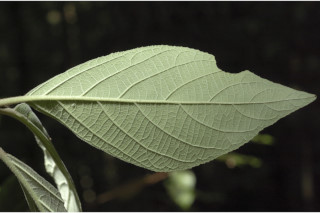
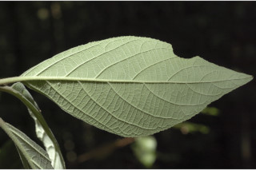

Large shrubs or small trees ca. 5 m tall.
ದೊಡ್ಡ ಗಾತ್ರದ ಪೊದೆಗಳು ಅಥವಾ ಅಂದಾಜು 5 ಮೀ. ಎತ್ತರದ ಸಣ್ಣ ಮರಗಳು.
Large shrubs or small trees ca. 5 m tall.
பெரிய குத்துச்செடி அல்லது சிறிய மரம் 5 மீ. உயரம் வரை வளரக்கூடியது.
Bark grey, smooth.
ತೊಗಟೆ ಬೂದು ಬಣ್ಣದಲ್ಲಿದ್ದು,ನಯವಾಗಿರುತ್ತದೆ.
Bark grey, smooth.
மரத்தின் பட்டை சாம்பல் நிறமானது, வழுவழுப்பானது.
Branchlets quadrangular, densely stellate tomentose.
ಕಿರುಕೊಂಬೆಗಳು 4-ಕೋನಯುಕ್ತವಾಗಿದ್ದು ಸಂದಣಿಗೊಂಡ ನಕ್ಷತ್ರ ರೂಪದ ದಟ್ಟ ಮೃದುತುಪ್ಪಳದಿಂದ ಕೂಡಿರುತ್ತವೆ.
Branchlets quadrangular, densely stellate tomentose.
சிறிய நுனிக்கிளைகள் நான்கு கோணங்களுடையது, அடர்த்தியாக நட்சத்திர வடிவ உரோமங்களுடையது.
Leaves simple, opposite, decussate; petiole 2.5-7.5 cm long, terete, densely white stellate tomentose; lamina 10.5-25 x 5.5-15 cm, elliptic to broadly elliptic or ovate, apex acute or acuminate, base acute, thinly coriaceous, glaucous, densely white stellate tomentose beneath; secondary_nerves and reticulation impressed above; midrib raised above; secondary_nerves 6-9 pairs; tertiary_nerves distantly obliquely percurrent.
ಎಲೆಗಳು ಸರಳವಾಗಿದ್ದು ಅಭಿಮುಖಿ,ಕತ್ತರಿಯಾಕಾರದ ಜೋಡನಾ ವ್ಯವಸ್ಥೆಯಲ್ಲಿರುತ್ತವೆ; ತೊಟ್ಟುಗಳು 2.5 – 7.5 ಸೆಂ.ಮೀ. ಉದ್ದವಿದ್ದು, ದುಂಡಾಗಿರುತ್ತವೆ, ನಿಬಿಡವಾಗಿ ನಕ್ಷತ್ರ ರೂಪದ ದಟ್ಟ ಮೃದುತುಪ್ಪಳದಿಂದ ಕೂಡಿರುತ್ತವೆ;ಪತ್ರಗಳು 10.5 - 25 X 5.5 –15 ಸೆಂ.ಮೀ. ಗಾತ್ರ, ಅಂಡವೃತ್ತದಿಂದ ವಿಶಾಲ ಅಂಡವೃತ್ತ ಅಥವಾ ಅಂಡದ ಆಕಾರ ಹೊಂದಿದ್ದು, ಚೂಪಾದ ಅಥವಾ ಕ್ರಮೇಣ ಚೂಪಾಗುವ ತುದಿ, ಚುಪಾದ ಬುಡ,ತೆಳುವಾದ ತೊಗಲನ್ನೋಲುವ ಮೇಲ್ಮೈ ಹೊಂದಿದ್ದು ಪತ್ರಗಳ ತಳಭಾಗ ಮಾಸಲು ಬೂದು ಹಸಿರಿನ ಬಣ್ಣದಲ್ಲಿದ್ದು ದಟ್ಟವಾದ ನಿಬಿಡವಾಗಿ ಬಿಳಿ ಬಣ್ಣದ ನಕ್ಷತ್ರ ರೂಪದ ದಟ್ಟ ಮೃದುತುಪ್ಪಳದಿಂದ ಕೂಡಿರುತ್ತವೆ.; ಎರಡನೇ ದರ್ಜೆಯ ಮತ್ತು ಜಾಲಬಂಧ ನಾಳಗಳು ಪತ್ರಗಳ ಮೇಲ್ಭಾಗದಲ್ಲಿ ಅಚ್ಚೊತ್ತಿದಂತಿರುತ್ತವೆ;ಮಧ್ಯನಾಳ ಮೇಲ್ಭಾಗದಲ್ಲಿ ಮೇಲೆದ್ದಿರುತ್ತದೆ; ಎರಡನೇ ದರ್ಜೆಯ 6 ರಿಂದ 9 ಜೋಡಿಗಳಿರುತ್ತವೆ; ಮೂರನೇ ದರ್ಜೆಯ ನಾಳಗಳು ಅಂತರ ಹೊಂದಿದ್ದು,ಓರೆಯಾಗಿ ಎಲೆಯ ದಿಂಡಿಗೆ ಅಡ್ಡವಾಗಿ ಕೂಡುವ ಮಾದರಿಯಲ್ಲಿರುತ್ತವೆ.
Leaves simple, opposite, decussate; petiole 2.5-7.5 cm long, terete, densely white stellate tomentose; lamina 10.5-25 x 5.5-15 cm, elliptic to broadly elliptic or ovate, apex acute or acuminate, base acute, thinly coriaceous, glaucous, densely white stellate tomentose beneath; secondary_nerves and reticulation impressed above; midrib raised above; secondary_nerves 6-9 pairs; tertiary_nerves distantly obliquely percurrent.
இலைகள் தனித்தவை, எதிரடுக்கமானவை, குறுக்குமறுக்கானவை; இலைக்காம்பு 2.5-7.5 செ.மீ. நீளமானது, குறுக்குவெட்டுத் தோற்றத்தில் வளையமானது, அடர்த்தியாக வெள்ளை நிறமானது நட்சத்திர வடிவ உரோமங்களுடையது; இலை அலகு 10.5-25 X 5.5-15 செ.மீ., நீள்வட்ட வடிவானது முதல் அகன்ற நீள்வட்ட வடிவானது அல்லது முட்டை வடிவானது, அலகின் நுனி கூரியது அல்லது அதிக்கூரியது, அலகின் தளம் கூரியது, மெல்லிய கோரியேசியஸ், அலகின் கீழ்பரப்பு மெழுகு பூசியது போன்றது அல்லது சாம்பல் கலந்த நீல நிறமானது (க்களாக்கஸ்), அலகின் கீழ்பரப்பு அடர்த்தியாக வெள்ளை நிறமான நட்சத்திர வடிவ உரோமங்களுடையது; இரண்டாம் நிலை நரம்புகள் மற்றும் பிற நரம்பு பகுதிகள் அலகின் மேற்புறத்தில் பள்ளமானது; மையநரம்பு மேற்புறத்தில் அலகின் பரப்பைவிட உயர்ந்து இருக்கும்; இரண்டாம் நிலை நரம்புகள் 6-9 ஜோடிகள்; மூன்றாம் நிலை நரம்புகள் தளம் நோக்கிய இணையான அகன்ற பெர்க்கரண்ட்.
Inflorescence branched cymes, axillary; flowers purple, sessile.
ಪುಷ್ಪಮಂಜರಿ ಅಕ್ಷಾಕಂಕುಳಿನಲ್ಲಿದ್ದು ಕವಲೊಡೆಯುವ ಮಧ್ಯಾರಂಭಿ ಮಾದರಿಯವು; ಹೂಗಳು ಕೆನ್ನೀಲಿ ಬಣ್ಣದಲ್ಲಿದ್ದು ತೊಟ್ಟುರಹಿತವಾಗಿರುತ್ತವೆ.
Inflorescence branched cymes, axillary; flowers purple, sessile.
கிளைத்த சைம் வகை மஞ்சரி, இலைக்கோணங்களில் காணப்படுபவை; மலர்கள் பர்புள் நிறமானது, காம்பற்றது.
Drupe, globose, black, shining, 4 pyrenes; seeds 3-4.
ಡ್ರೂಪ್ಗಳು ಗೋಳಾಕಾರದಲ್ಲಿದ್ದು,ಕಪ್ಪಾಗಿರುತ್ತವೆ,ಹೊಳಪಿನ ಸಮೇತವಿದ್ದು 4 ಪೈರೀನುಗಳನ್ನೊಳಗೊಂಡಿರುತ್ತವೆ.ಬೀಜಗಳ ಸಂಖ್ಯೆ 3 - 4.
Drupe, globose, black, shining, 4 pyrenes; seeds 3-4.
உள்ளோட்டுத்தசைகனி (ட்ரூப்), கோள வடிவமானது, கருப்பு நிறமானது, பளபளப்பானது, 4 பைரீன்; விதைகள் 3-4.
 
